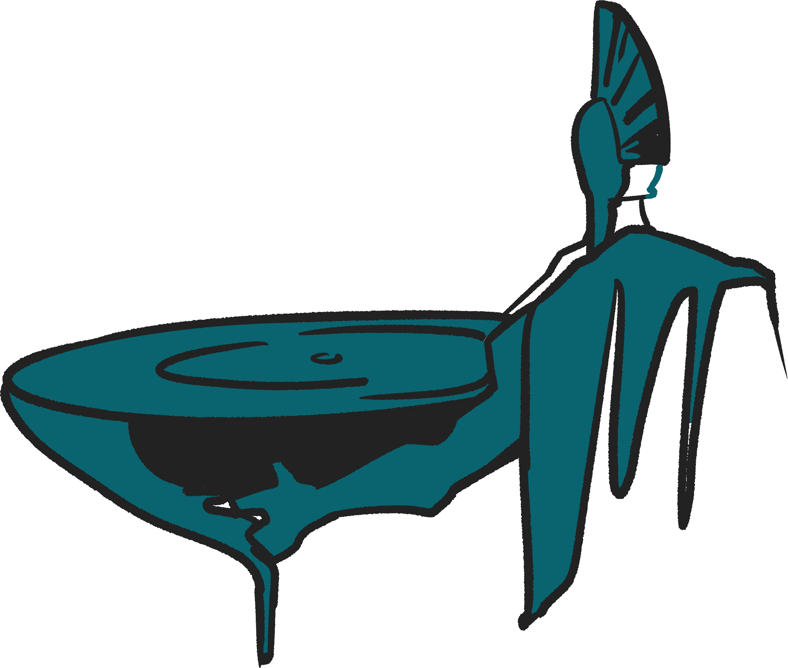
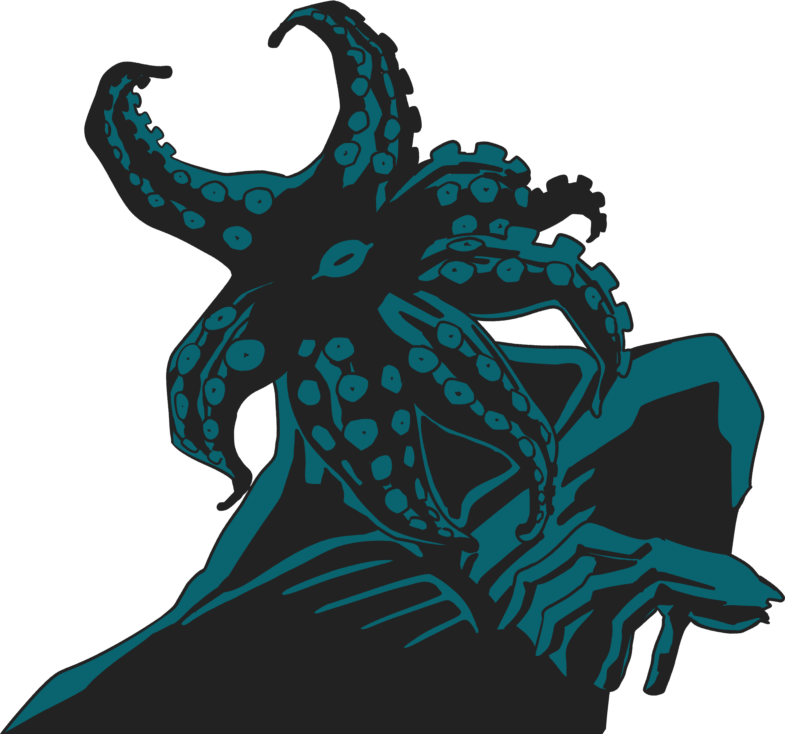
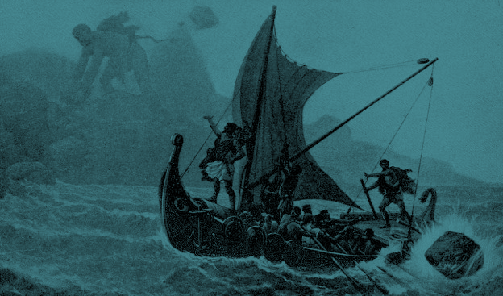
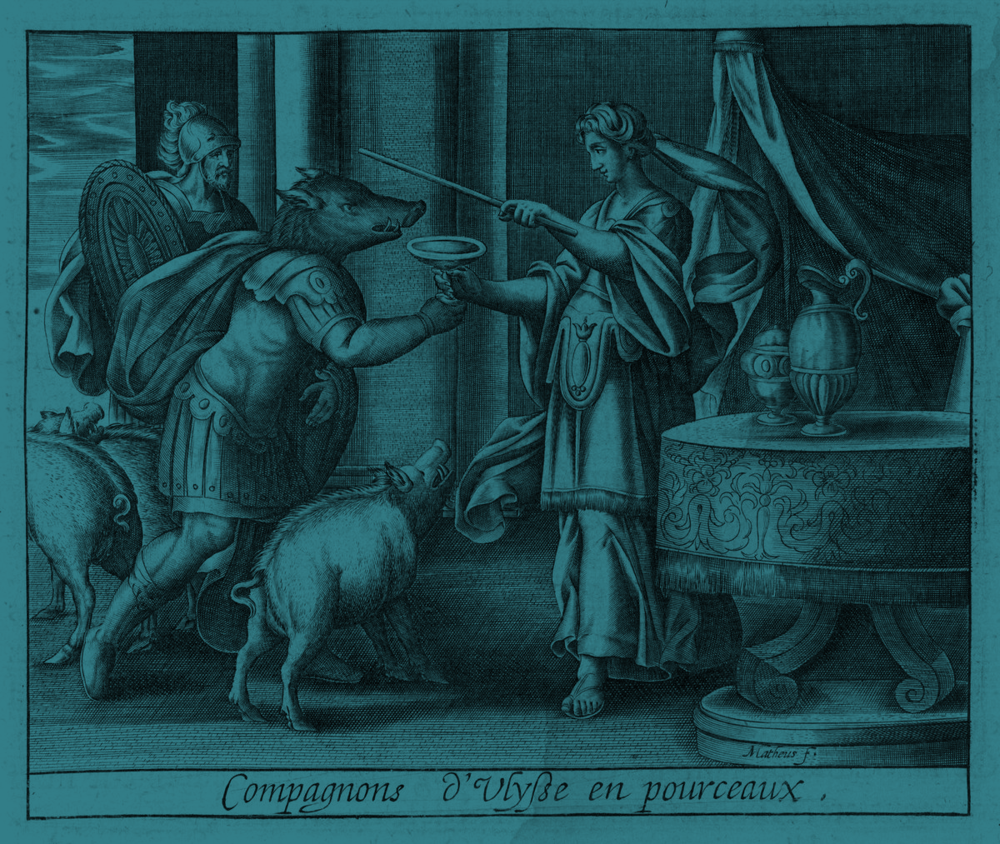
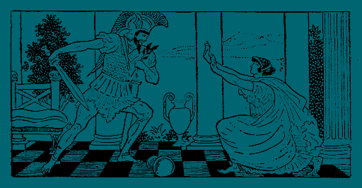
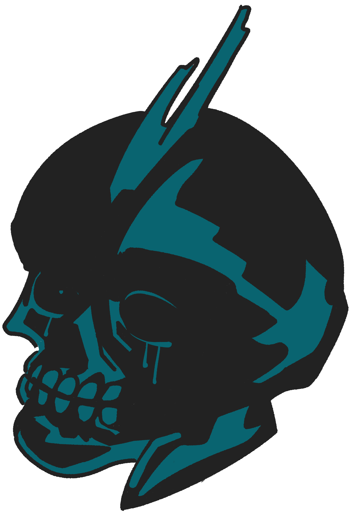
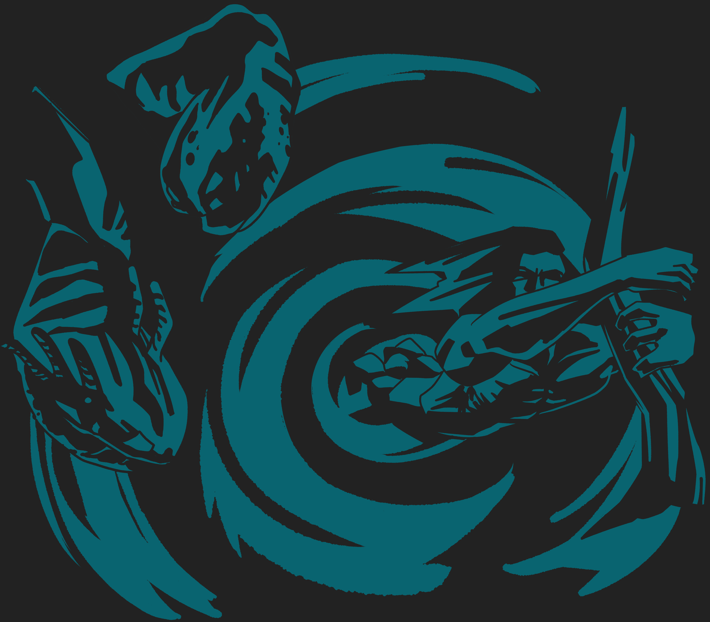
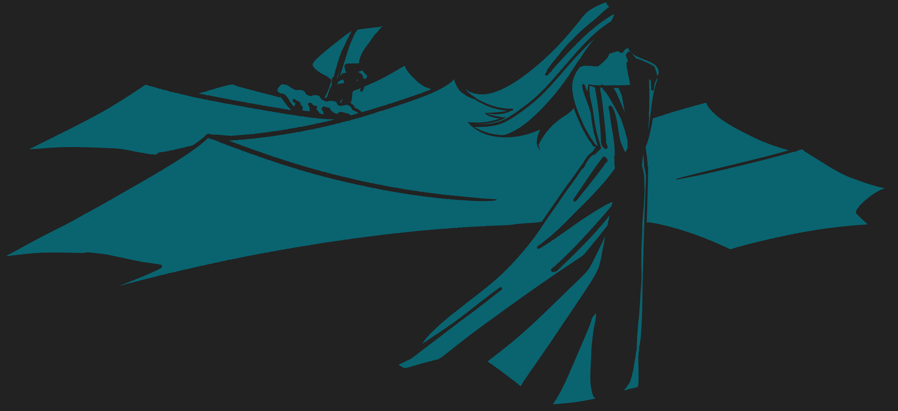
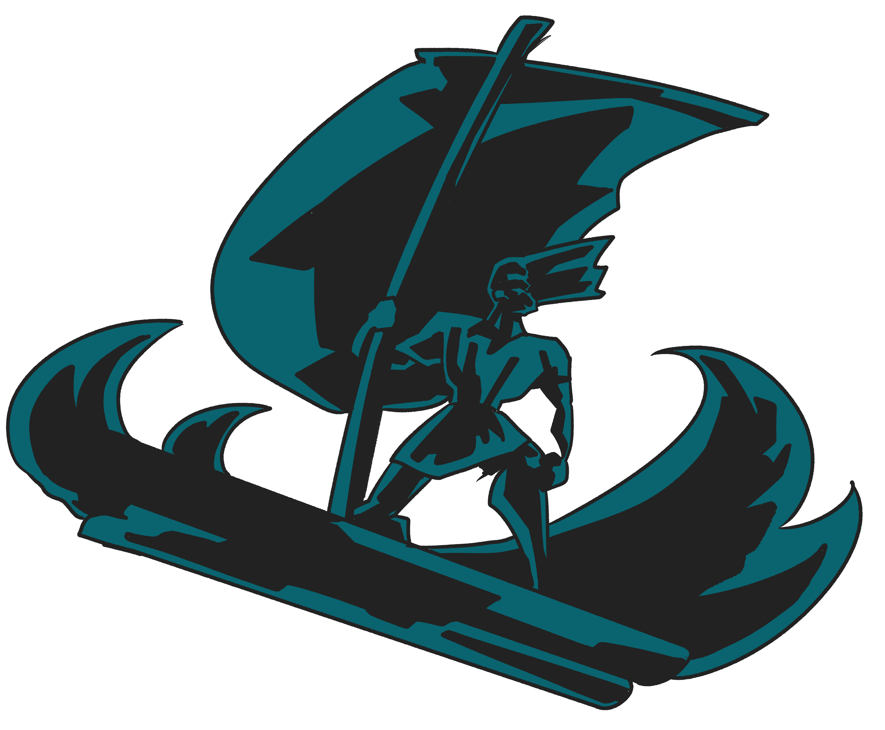
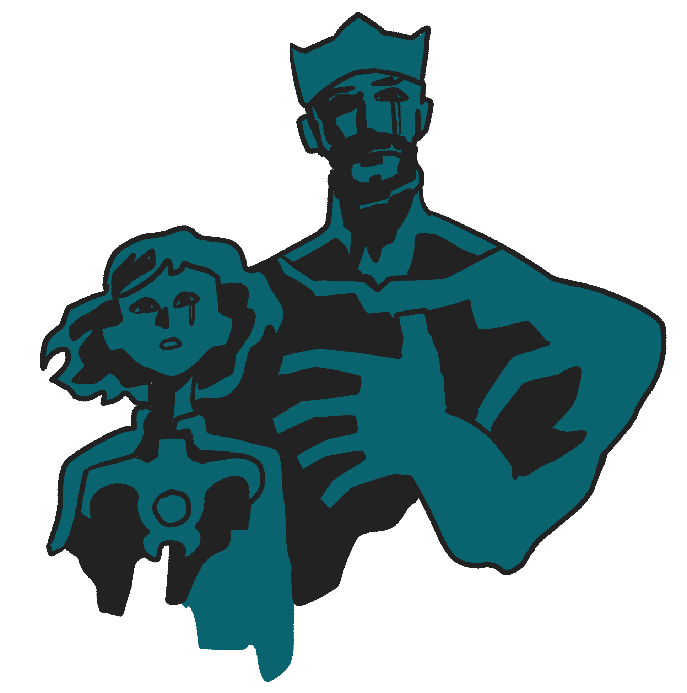

01
외눈 거인,
폴리페무스를
만나다.
귀향 도중 휴식을 위해 들린 한 섬에서 오디세우스 일행은 외눈박이 거인 폴리페무스의 동굴에 갇히게 됐다. 거인은 입구를 바위로 막고, 병사들을 잡아먹기 시작했다.
이때 오디세우스는 꾀를 내어
거인에게 독한 포도주를 대접했다. 기분이 좋아진 거인이 이름을 묻자, 꾀많은 오디세우스는 자신의 이름을
아무도(Nobody)라고
알려줬다.

술에 거하게 취한 외눈거인은 얼마안가 깊은 잠에 빠져들었다.
기회를 잡은 오디세우스는 병사들에게 날카롭게 깎은 나무말뚝의 끄트머리를 불로 달구게 했다.

그리고 그들은 온 힘을 다해 말뚝을 들어올려 거인에 외눈에 찔러 넣었다.


폴리페무스는 눈이 찔린 고통에 비명을 질렀다. 소리를 들은 동료 거인들이 동굴 앞으로 와서 무슨 일이냐고 물었다. 하지만 폴리페무스는 “지금 아무도가 나를 죽이려 해!”라고 소리칠 뿐이었고, 동료 거인들은 별일 아니라 생각하며 돌아갔다.
틈을 타서 오디세우스 일행은 무사히 도망쳤다.
그렇게 기고만장해진 오디세우스는 거인의 앞에서 오만을 부렸다.
그가 외쳤다.
“외눈거인이여! 만일 필멸자들 중 누군가가 네놈의 눈이
멀어버린 이유를 묻는다면 도시를 파괴하는 자,
라에르테스의 아들, 이타카의 왕
오디세우스가 네 눈을 멀게 했다 말해라!”

오디세우스의 말에 폴리페무스는 분노했다.
눈을 잃은 외눈 거인은 자신의 아버지를 향해 오디세우스를 향한 저주를 빌었다.
그런데 하필 그의 아버지는 바다의 신 포세이돈이었다.

아들의 간청에 격노한 포세이돈은 바다를 뒤엎었고, 오디세우스가 절대로 집에 돌아가지 못하게 하기로 다짐했다. 이렇게 오디세우스는 한 순간의 오만섞인 실수로 포세이돈의 분노를 사 수 년간 바다를 떠돌게 된다.
“
검은 머리의 신이자 대지를 흔드시는 포세이돈이시여, 내가 당신의 아들이라면 오디세우스가 결코 고향 땅을 밟지 못하게 해주십쇼. 만약 그자의 귀환이 운명이래도 모든 동료를 잃고 비참한 모습으로 아주 오랜 시간이 흐른 뒤에야 도착하게 해주십쇼.
”
02
마녀,
돼지,
연회.

바다를 떠돌던 오디세우스 일행은 마녀 키르케의 아이아이에 섬에 도착한다. 그러나 선발대로 나선 부하들이 마녀가 준 포도주를 마시고 단체로 돼지가 되버리는 참사가 일어난다.
마녀가 음식에 기억을
지우는 독약을 타서 먹인 뒤,
돼지로 변신시켜 축사에
가둔 것이었다.

동료들을 구하기 위해 나선 오디세우스는 가는 도중 전령의 신 헤르메스를 만나게 된다. 그를 도우려 온 헤르메스는 그에게 우유빛깔의 꽃을 건네 줬다. 그것은 바로 마법에 걸리지 않게하는 신비한 약초인 ‘몰리’였다.

키르케는 오디세우스가 성에 당도하자 그를 맞이하며 똑같은 마법의 포도주를 권했다. 그 또한 홀릴 작정이었던 것이다. 하지만 오디세우스는 ‘몰리’ 약초 덕에 마법이 통하지 않았다. 오히려 오디세우스는 칼을 뽑아들어 그녀의 목을 겨누며 위협했다.

뜻밖의 상황에 당황한 키르케는 부하들을 다시 인간으로 돌려놓으며 오디세우스에게 사과했다.
아예 키르케는 그의 용모와 성품에 반해 연회를 열고 그와 동료들을 1년간 머물게 해주었다. 떠날 때가 되자 키르케는 그의 안전한 귀향로를 찾기 위해 저승에 가서 눈먼 예언자 테이레시아스를 만나보라는 조언을 건냈다.
“
당신은 누구시며 어디서 오신 분입니까? 마법에 매혹되지 않다니 참으로 경이롭네요. 지금까지 이 마법을 견뎌낸 사람은 아무도 없었어요. 과연 당신의 가슴 속에는 마법에 걸리지 않는 마음이 들어 있군요!
”
03
저승에서.

키르케의 안내로 저승에 간 오디세우스는 눈먼 예언자 테이레시아스를 만난다. 예언자는 귀환할 수 있는 유일한 방법과 무서운 경고를 남겼다.

“태양신 헬리오스의 섬에 가거든 그가 기르는 소들을 절대로 해치지 마십시오. 만약 소를 건드린다면, 당신은 모든 동료를 잃고 홀로 비참하게 고향에 도착할 것입니다.”
예언자의 경고를 들은 오디세우스는 탄식을 내뱉으면서도, 담담하게 신탁을 받아들였다. 그는 앞으로의 불길한 미래로부터 부하들을 단단히 단속하리라 결심했다.

또한 오디세우스는 트로이 전쟁의 총사령관, 아가멤논의 혼령을 마주하고 크게 놀랐다.
전쟁이 끝났을 때, 살아있던 그가 어째서 벌써 저승에 와 있는지 이해할 수 없었기 때문이다.
이젠 차가운 유령이 된 아가멤논은 죽음의 전말을 이야기했다. 전쟁이 끝나고, 집으로 돌아간 그는 정작 도착하자마자 아내와 그녀의 불륜남에게 비참하게 살해당했다. 배신감에 통곡하던 아가멤논은 오디세우스에게 충고를 건넸다.
“사람을 절대로 온전히 믿지 마시오. 고향에 들어갈 때도 정체를 숨긴 채 비밀리에 가시오. 사람은 더이상 믿을 수 없으니.”
오디세우스는 저승에서 얻은 씁쓸한 지혜들을 품에 안고 다시 산 자들의 세상으로 발길을 돌렸다.
“
죽음에 대해 내게 그럴싸하게 말하지 마시오, 고결한 오디세우스! 나는 죽은 자들의 왕이 되어 군림하느니, 차라리 지상에서 영토도 없고 재산도 없는 가난한 농부 밑에서 품삯을 받는 머슴이 되고 싶습니다.
”
04
혼자가 되다.
태양신 헬리오스의 섬에 도착한 오디세우스 일행. 그들은 한 달 동안 몰아친 거센 역풍 때문에 섬에 발이 묶이고 만다. 오디세우스는 예언자의 경고를 기억하고 헬리오스의 소들을 먹지 마라 지시했다.
하지만 그가 자리를 비운 사이, 굶주림에 미쳐가던 부하들은 결국 소들을 도살해 먹어버리고 말았다.
헬리오스는 아끼던 소들을 잃자 분노해 제우스에게 이들을 처벌해달라 요구했다. 결국 제우스는 오디세우스 일행이 출항하자마자 벼락을 내리쳤다.
배는 순식간에 박살났고, 그들은 하염없이 거센 조류에 밀려갔다.
그리고 그들이 다다른 곳은
여섯 머리 괴물 스킬라와 소용돌이 괴물 카리브디스가 버티고 있는 지옥의 해협이었다.

부하들은 모두 소용돌이에 휩쓸리거나 스킬라의 이빨에 씹혀 참혹하게 죽었다. 홀로 남은 오디세우스는 절벽에 자라난 무화과 나무 가지를 붙잡고 필사적으로 매달렸다. 그는 공포와 절망 속에서 버텨야만 했다.

“
내가 겪은 그 모든 바다의 고통 중에서도, 스킬라의 동굴 속으로 부하들이 비명을 지르며 끌려가 잡아먹히는 모습을 보는 것이 가장 비참하고 가슴 찢어지는 일이었다.
”
05
여신 칼립소와의
7년.

표류끝에 도착한 오기기아 섬. 얄궃게도 섬의 주인인 여신 칼립소는 오디세우스에게 반해 그를 남편으로 삼으려 했다.
때문에 그는 여신과 함께 편안한 하루하루를 보낼 수 있었지만 여신은 영원한 생명과 늙지 않는 젊음까지 약속하며 무려 7년 동안이나 그를 섬에 묶어 두었다.
.gif)
오디세우스는 여신의 호의 속에서도 늘 마음을 붙이지 못한 채 온종일 해변에 홀로 앉아 고향과 가족 생각에 눈물을 흘렸다.

오디세우스의 가여운 모습은 올림포스 신들 눈에 들어, 그들 대다수가 그도 이젠 집으로 돌아가야 된다고 말했다. 이에 신들의 왕 제우스는 칼립소에게 오디세우스를 고향으로 돌려보내라고 명령했다.
.gif)
하지만 칼립소는 반발하며 오히려 신들의 내로남불을 비판하며 그를 보내주지 않으려 했다.
"당신들은 참 시기심이 많고 가혹하군요! 당신들은 인간들과 바람을 잘만 피우면서, 내가 죽어가던 인간을 구해 남편으로 삼으려 하니 이제 와서 빼앗아 가겠다는 말인가요?"

하지만 아무리 그녀라도 제우스의 명령을 거스를 수는 없었다. 여신은 그에게 식량과 뗏목을 내어주며 바다로 떠나보냈다. 그녀는 오디세우스가 고향으로 돌아가 가족과 재회하길 빌어주며 이별의 슬픔을 뒤로했다.
고향을 향해 나아가던 그였으나. 포세이돈은 오디세우스를 쉬이 놔주지 않았다. 그는 다시 폭풍을 만났다. 오디세우스는 굴하지않고 악착같이 버텼지만, 세찬 파도에 뗏목은 파괴되었고 그는 바다 속에서 정신을 잃었다.

정신을 차린 그는 스케리아 섬의 해변에 쓸려가 있었다. 초췌해진 몰골로 표류하던 그는 다행스럽게도 선한 공주 나우시카와 만나게 된다. 나우시카는 그의 모습을 보고 베풀어주고자 궁전으로 초대했다.

오디세우스는 궁전에서 왕과 공주에게 수 년에 걸친 방랑담을 말해주었다. 모험과 시련, 유혹과 각오. 그의 이야기에서 감동과 슬픔을 느낀 왕과 공주는 그에게 안전한 배편을 내어주었다.

그리고 마침내. 오디세우스는 그토록 갈망하던 고향 이타카의 흙을 밟게 되었다. 그가 트로이를 떠난지 자그마치 20년 만이었다.
“
그는 마침내 그리던 조국 땅에 발을 디뎠고, 이타카의 흙을 향해 뜨겁게 입을 맞추었다.
”
2부 NOTOS
fin.